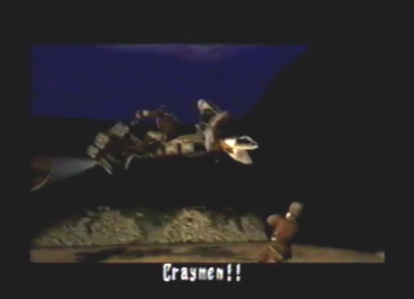
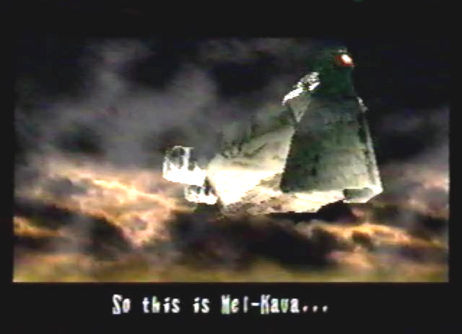

Enemies
Encountered/ None |
|
Diary Entry 21: Village of Zoah Visit 3 The Guardian Fire Shows the Way to Mel-Kava After having completely decimated the Imperial Air Force Post, I returned to the Holy District to go tell Vaiman the good news. As I entered the Holy District, I overheard another conversation from the mother and daughter sitting near the storehouse. They talked about how Bezer wouldn't return to the Holy district and the fact that Quitor is selling provisions from the forest, to outsiders. Next, I entered the storehouse and intuitively listened as Boaz explained the village code to me. He told me that children have to be approved by the Council. All others are banished from Zoah to survive on their own, in the outside world. It was the villages way to control the population. How horrible, I thought to myself. As I left the storehouse, I noticed Paet standing outside by the church. he didn't look like he was in a very good mood. He told me Vaiman was inside. He was sure that his father was up to no good. I proceeded to enter the church. Upon entering, I listened to a long conversation between Damon the High Priest and Vaiman, about the situation the village is trying to overcome, involving the Empire's invasion and occupation of Zoah. Ultimately, Vaiman was blinded by my dragon's power and believed the Empire would no longer be of any threat to the village. The two men soon became aware of my presence. I quickly told them I'd been successful in destroying the Empires base. Vaiman was ecstatic with laughter. His disgusting fat jiggled around, as he jumped up and down. Damon soon left infatuated with anger. Vaiman explained to me that he undoubtedly would be elected the next High Priest, and that I should go see him the next day, for my reward. I left with thoughts of the reward on my mind. As I walked around the village, I just couldn't wait, so I hurried over to Vaiman's house to ask him if I could have the reward a little early. When I entered his room, he was busy talking things over with Quitor. After talking to him a couple of times, he gave me 500 Dynes as an incentive to leave him alone, for the time being. I would definitely have to wait until the next day, Vaiman was just too busy. To pass some time, I thought it a good idea to go over and see how Paet was doing. I hurried to the back of town and of course, found Paet working on his airship. He uttered something about a letter made out to me. He soon handed me the letter and when I read it, I was surprised to find that someone wanted to meet me in this exact location, during the night. I wondered who it could be? Paet thought it was probably someone I knew. But who? I wandered around the village, waiting for the sky to fill with the gentle light of the stars. When night was upon the village, I quickly headed over to Paet's work area. A man stepped out from the shadows. It was Craymen! I immediately attempted to end his life, by firing my gun directly at his head. Before I could fire, my gun was quickly shot out of my hand! A deadly silence ensued. Craymen then explained to me his intentions and motivations. He planned to save the world from extinction and to do so he needed the key element, Azel. He had to be ruthless, and that is why he killed all of my friends. "This is war," he said. His actions were still unacceptable, I would never forgive him for the atrocious acts he committed. He continued to tell me that the Empire hadn't given up yet, so he had come to ask for my help. Before I could even comprehend an answer to that question, I was shot at from above. With adrenaline pumping through my body, I evaded the gunfire. I somehow came away with my life intact. It was that bastard Zastava! He soon descended in his flying machine, and both him and Craymen made their escape. I had just lost my chance for revenge! I wondered if I would ever get another chance. Paet jumped down from above. He had been watching the whole thing, hidden in the shadows. "I let them get away! I bet they S#!t a brick," he said. His comical routine didn't overshadow the fact that the man I'd been chasing all this time, just slipped through my fingers. He asked me what was wrong. I told him it was nothing. Morning soon arrived and I made my way over to Vaiman's house, to claim my reward. He rewarded me with the Temple Key. With this I would be able to enter the sanctuary within the church, wherein the Guardian Fire could be found. Before leaving, I talked to Vaiman once more. He made me an offer. It was an offer for me to become guardian of Zoah. I told him I couldn't give that kind of commitment at the moment, and turned him down three times. After he threatened to make a deal with the Empire, saying he would give them valuable information about my dragon, I had no choice but to reconsider. I guess it couldn't be helped with a greedy, power hungry man such as Vaiman. As my eyes angrily wondered, I noticed he had many different kinds of books on his bookshelf, he said I could keep one of the books titled, Dragon Report. With no respect for the way he had acted, I left his estate and walked back to the church, in the blackness of night. I used the Temple Key and entered the sanctuary. Inside I found the Guardian Fire, a relic that protected the town form monsters with its mystical white light. When I examined the relic, everything turned pure white, and I was shown a vision of Mel-Kava and the Tower, just north of Zoah. Paet, upon having seen the light change from outside the church, immediately entered the room and said I had been covered with light while I was touching the relic. When he touched it, nothing happened. He needed more time to examine and acquire information about the relic. He said to come back later. When I reentered the sanctuary, he gave me a report named after him called, Paet's Report. It contained information on how to destroy Mel-Kava. After reading the report I discovered that: Mel-Kava uses a pair of engines to fly, these engines need to be destroyed, the path to these engines are blocked by crawling guardians, the destruction of Mel-Kava lies within, Mel-Kava emits energy particles that would even be capable of pushing my dragon back, the ship will become unstable if I destroy the exhaust ports atop Mel-Kava, and there supposedly is a device that can protect me from the particles pouring endlessly out of the ships engine. With this vital information in hand, I headed out to destroy Mel-Kava and have the path to the Tower revealed once and for all! |
|
| Divine
Overview |
1. Once back at Zoah, head into the Holy District. You'll find that you can eavesdrop on the mother and daughter once more, to listen to their conversation. |
2. Also, head into the storehouse to hear what Boaz has to say. You'll learn about the village code. |
3. Paet can be found outside the church, he's not in a good mood. He will tell you that Vaiman is inside, so go ahead and enter the church. |
4. Once inside, Vaiman and the High Priest Damon, will have a long conversation about current events, involving the fate of the town. Vaiman will soon be elected the new High Priest, and will tell Edge to come back the next day for his reward. |
5. Don't listen to Vaiman, go get your reward now! After the event at the church, head on over to Vaiman's house. He is currently busy talking to Quitor. If you talk to him twice, he will give you 500 Dynes, as an incentive to leave him alone. |
6. Your next task is to go talk to Paet. He gives you Letter X 1. Who is it from? |
7. Nighttime will automatically occur, and you will have to return to where Paet gave you the letter. |
8. Who is that in the shadows? |
9. It's none other than Craymen of course! He has come to ask for your help, and after all he has done! |
10. Before Edge even has time to consider Craymen's request, Zastava graciously fires upon him in an attempt to end his life. |
 11. After the life threatening incident, both Craymen and Zastava make their escape. |
12. Paet comes to the rescue! A little too late I might say. |
13. When morning arrives, go see Vaiman to claim your reward. He'll give you the Temple Key X 1. Now you can enter the back room inside the church. This room leads to the sanctuary, wherein the Guardian Fire resides! |
14. Before leaving, talk to Vaiman once more. He will make you an offer to become the guardian of the town. Turn him down three times. After doing so, talk to him once more and reconsider his offer. After you accept the position as guardian of Zoah, examine his book shelf. He will allow you to take Dragon Report X 1. |
15. As you leave Vaiman's house and come near the back of the church, you will notice Damon, the retired High Priest paying his respects to a massive headstone. Stand far away and eavesdrop on him, as he talks to himself. |
16. At night, head over to the church with the Temple Key in hand. |
17. Once inside, you can now enter the back door, leading into the sanctuary. |
18. The sanctuary contains the Guardian Fire, a relic from the Ancient Age that protects Zoah from monsters. Examine the relic. |
 19. Edge will see a vision of Mel-Kava and the Tower. Its location can be found to the north of Zoah. |
20. Paet enters the room, upon having seen the light change from outside the church. He tells Edge to come back later, and he'll have some answers as to the mysteries of Mel-Kava. |
21. You will then be brought back outside the sanctuary room. Immediately reenter the room, and Paet will give you Paet's Report X 1. Read his report, it gives valuable information on just what you need to do to destroy Mel-Kava. |
22. Make sure your prepared, it's time to destroy Mel-kava! |